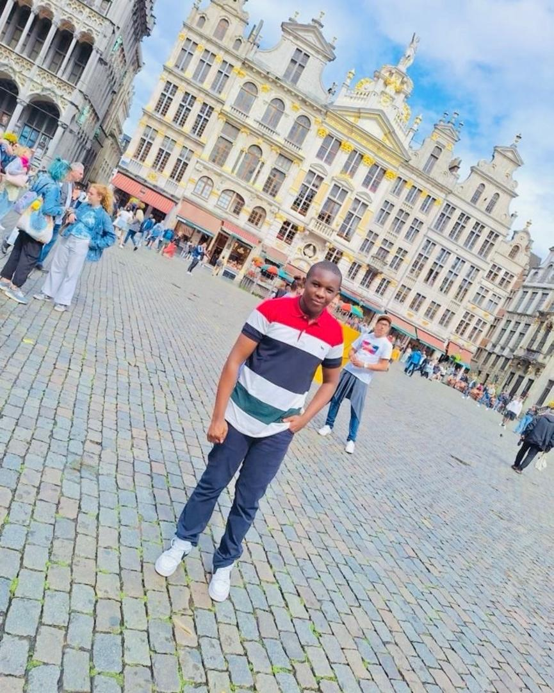
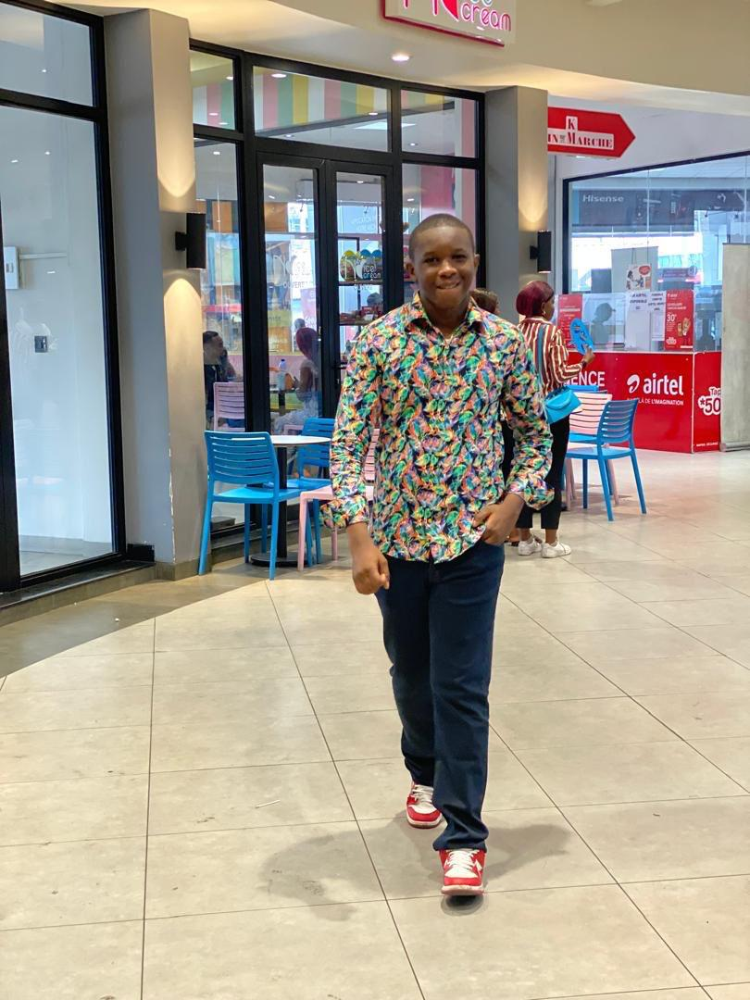

MOISE MK
✨ Bienvenue sur mon portfolio étudiant ✨
Je me nomme Moïse MK étudiant à l'université protestante au congo (UPC) en première année de licence Informatique & Sciences du numérique. J’apprends à créer des sites web simples, propres et fonctionnels.
Voir mes activités →À propos
Étudiant curieux et passionné par le web, j’ai découvert le développement il y a un an. J’aime construire des interfaces claires et accessibles. En dehors des cours, j’aime lire, faire du sport et participer à des projets associatifs. Mon objectif : devenir développeuse full-stack et créer des outils utiles au quotidien.
Galerie

Paris est une ville magnifique où l’on peut se promener à pied pour découvrir ses rues, ses monuments et son ambiance unique. j'ai visité la Tour Eiffel, flâner sur les Champs-Élysées et encore explorer les bords de la Seine.

Mon congés à belgique

tour à doubai

la spiritualité n'inclue pas l'élégance
Activités
- 📚 Études : Licence Informatique - parcours développement web
- 💻 Projets : création de sites vitrine, petits jeux en JavaScript
- ⚽ Sport : Volley-ball universitaire (entraînements chaque mercredi)
- 🎨 Design : initiation à Figma et à l’UI simple
- 🌍 Bénévolat : aide numérique pour seniors